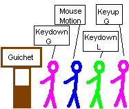
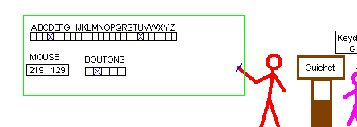

Les events SDL posent des soucis à beaucoup de personnes. La gestion de SDL_PollEvent, SDL_WaitEvent et des switchs qui vont avec apporte parfois de la confusion. Ce tutoriel propose une solution alternative pour gérer tout cela.
SDL gère les events comme une file d'attente. C'est un peu comme si vous aviez la situation ci-dessous :

On y voit une file d'attente d'events. Un event, c'est comme une personne dans une file de cinéma qui fait la queue, attend son tour. Et cette personne n'est là que pour dire un message, par exemple : "On a appuyé sur G !!". Elle le dit : "Event type = KEYDOWN", "Event keysym = G".
Il faut donc considérer les events dans l'ordre, un par un, comme une file d'attente. Pour cela, vous avez toutes les fonctions pour gérer le guichet. Vous avez principalement la fonction SDL_PollEvent.
Cette fonction dit au premier qui attend : "Alors, vous êtes qui ? Ok, vous voulez quoi ? Dire qu'on appuie sur la touche G, ok, je le note". SDL_PollEvent note tout ça dans une structure SDL_Event, puis libère le bonhomme : sur mon croquis ci-dessous, le premier bonhomme mauve peut partir. Le suivant sera le bleu.
Mais avant, on analysera ce qu'on a noté. Notez que SDL_PollEvent renverra 0 si il n'y avait pas de personne en attente, et 1 s'il y avait quelqu'un.
En C, cela donne ce code :
SDL_Event event; // endroit où on prendra nos notes sur l'event qui arrive
SDL_PollEvent(&event);
switch(event.type)
{
case SDL_QUIT:
continuer = 0;
break;
case SDL_KEYDOWN:
switch(event.key.keysym.sym)
{
case SDLK_ESCAPE:
// ....
break
case SDLK_UP:
// ....
break;
// ....
break;
}
case SDL_KEYUP:
switch(event.key.keysym.sym)
{
// même bazar.
// break
}
break;
}
Ce qui est gênant dans ce code, c'est avant tout la lourdeur du switch. Que dis-je ! DES switchs ! Des switchs imbriqués. Cela n'est pas simple à comprendre, c'est lourd à maintenir, cafouilleux.... Le pire, c'est que dans les exemples que je vois, bien souvent ces switchs sont directement dans le main, et apparaissent parfois à plusieurs endroits du programme : si par exemple à un moment le personnage marche, on fait un gros switch avec les touches haut, bas, gauche, droite. Et s'il saute, on en fait un autre avec moins de touches, car on peut faire moins de choses en l'air, n'est-ce pas ! ;)
Autre soucis avec cette gestion, la question récurrente suivante :
Comment gère-t-on deux touches en même temps ?
En effet, si on regarde bien, on poll un event au départ et on regarde lequel c'est. Tel que c'est fait, on ne traitera qu'un event par frame (vous allez me dire, pour éviter cela, on peut enfermer le tout dans un while), mais peut-on pour autant gérer deux events "en même temps" ? Non, car soit je passe dans un case, soit dans un autre. Je peux donc gérer deux actions en même temps, mais si j'ai envie qu'il se passe quelque chose si et seulement si j'appuie sur deux touches en même temps, et qu'il ne se passe rien si je n'appuie que sur une seule, je ne peux pas (ou alors il faut ruser et alourdir encore ce gros switch).
Voici la solution que je propose (qui n'est pas forcément la meilleure du monde, mais qui apporte des avantages).

Nous voyons la file d'events sur la droite du dessin, que j'ai volontairement coupée. Pourquoi ? Parce que notre but va être de l'oublier. Pour cela, j'ai embauché un bonhomme rouge que je vais appeler UpdateEvents. Ce bonhomme, comme tout employé, a besoin de matériel pour travailler ! Qu'à cela ne tienne, je lui achète un grand tableau et bien sûr une craie et un chiffon pour effacer !
Ce que je vais lui demander, c'est de gérer la file des events tout seul. Moi je ne veux plus m'en occuper. Je veux qu'il prenne des notes sur un tableau, qu'il soit à jour. Je veux pouvoir, quand je veux, jeter un oeil sur le tableau, et constater comme sur le dessin que les touches D et U du clavier sont enfoncées, que les autres sont relâchées, que le deuxième bouton de la souris est enfoncé, que les autres sont relâchés, et que la souris est à la coordonnée 219;129.
Dans quel ordre sont arrivés D et U, ça ne m'intéresse pas. Ce que je veux savoir, c'est qu'au moment où je regarde, les touches D et U sont en bas.
Ainsi arrive donc ce cher employé UpdateEvents.
Maintenant, un peu de code :
typedef struct
{
char key[SDLK_LAST];
} Input;
void UpdateEvents(Input* in)
{
// ...
}
int main()
{
Input in;
// init SDL, chargement, tout ce que vous faites avant la boucle.
memset(&in,0,sizeof(in));
while(!in.key[SDLK_ESCAPE])
{
UpdateEvents(&in);
if (in.key[SDLK_UP])
{
// si on appuie sur la touche pour monter
}
}
return 0;
}
Voici un premier code. Pour l'instant, je cache volontairement le code de la fonction UpdateEvents.
La structure Input
Nous avons une structure Input. Dans mon dessin ci-dessus, cette structure n'est autre que mon tableau noir sur lequel mon employé va écrire.
Cette structure contient un tableau de char. J'utilise char, car c'est compact en mémoire, mais j'y stockerai des nombres, et ce n'est pas gênant si vous prenez ça comme un tableau de int. L'idée est de stocker 0 si la touche est relâchée, 1 si elle est enfoncée.
SDLK_LAST est une constante SDL qui contient la valeur de la plus haute valeur de touche de SDL, +1. Concrètement, ce tableau a comme taille une taille suffisante pour stocker toutes les touches possibles (une centaine à peu près).
Cette structure Input contient donc l'état de mon clavier ; son tableau me renseigne à tout moment sur l'état de chaque touche : c'est le tableau qui contient l'alphabet dans mon tableau noir ci-dessus, et toutes les cases associées à chaque touche. Si la case est cochée, la touche est en bas, sinon, elle est en haut.
Le main
Regardons dans le main maintenant. Je crée une variable de type Input, que j'appelle "in". Je fais ensuite un memset : cette fonction met toute la structure à zéro. Concrètement, elle remplit le tableau de 0 : elle efface toutes les cases sur le tableau noir : rien n'est coché.
Maintenant, au lieu du while (continuer) habituel, je dis :
while(!in.key[SDLK_ESCAPE])
Comme je le disais plus haut, je veux que le tableau contienne des 0 (touche relâchée) ou des 1 (touche enfoncée). Donc in.key[SDLK_ESCAPE] va me renvoyer 0 si je n'appuie pas sur ESC, et 1 si j'appuie. Avec le !, mon while veut dire :
"tant qu'on n'appuie pas sur ESC". Autrement dit, je quitte le while si j'appuie sur ESC.
Dans le while, j'appelle une fonction UpdateEvents dont j'ai pour le moment caché le code. Et puis, je fais un if. Je dis "si on appuie sur UP"... sans switch, sans rien : juste un if simple comme cela.
La fonction UpdateEvents
Il est temps de vous montrer la première version de cette fonction :
Et là, vous reconnaissez les events, avec le switch qui va avec, celui qui vous embêtait tant ! Eh bien ce qui est ennuyeux, on l'enferme.
Toute la gestion des events est localisée ici, faite une fois pour toutes, toute la difficulté est là et ne sortira plus.
Dans mon exemple ci-dessus, cette fonction, c'est le travail de mon bonhomme rouge. Lui, il gère la file d'attente, et il prend des notes sur le tableau. Son travail, c'est juste ça.
Analysons ce code : je crée une variable event. Et ensuite je rentre dans un while. Je dis : "Tant qu'il y a des events en attente, tu les traites."
Et là, je traite deux types : KEYDOWN et KEYUP. Que fais-je ? Un autre switch ? Naaaaa !! Je prends la valeur de event.key.keysym.sym, qui est le code de la touche appuyée, et je mets key[ce_code] à 1 si j'appuie, 0 si je relâche.
Mon bonhomme rouge, quand il voit un KEYDOWN, il prend sa craie et coche la bonne case, et quand il voit KEYUP, il prend son chiffon, et il efface la bonne case.
Ainsi, rien qu'avec ce code, la structure Input est mise à jour : le tableau noir qui me dit si une touche est enfoncée ou non est à jour !
Deux touches à la fois
Vous voulez tester si vous appuyez sur deux touches à la fois ?
Il suffit de lire mon tableau noir : je regarde si les deux cases sont cochées !
if (in.key[SDLK_UP] && in.key[SDLK_j])
{
// se passera QUE si vous appuyez sur Up et j
}
Vous voulez tester si vous appuyez sur une touche, mais pas sur une autre ?
Pareil, je regarde mon tableau noir et je vois qu'une case est cochée et que l'autre ne l'est pas :
if (in.key[SDLK_UP] && !in.key[SDLK_j])
{
// se passera QUE si vous appuyez sur Up sans appuyer sur j.
}
Appuyer une fois
Si vous faites par exemple un jeu de tir, vous souhaitez qu'un appui de touche lance UNE bombe, et pas plusieurs. Vous souhaitez que pour lancer dix bombes, il faut appuyer (et relâcher) dix fois la touche "j".
Comment gérer un tel évènement ?
if (in.key[SDLK_j])
{
in.key[SDLK_j] = 0; // ici, je remets le tableau j à 0 : donc je "fais croire" que la touche a été relâchée.
// lance une bombe.
}
Ce que je fais, c'est que je décide, juste après avoir regardé le tableau noir, de prendre mon chiffon et d'effacer moi-même la case ! UpdateEvents ne bronchera pas, c'est mon employé, je fais ce que je veux ! Et si je veux venir effacer une case de son tableau, je peux !
Grâce à ce concept simple, vous devrez taper plusieurs fois sur la touche j pour lancer vos bombes. Que se passe-t-il dans ce cas ?
Pour les curieux : Lorsque vous appuyez sur la touche j, un event SDL_KEYDOWN avec un paramètre j est généré. La fonction UpdateEvents met donc in.key[SDLK_j] à 1. Vous testez "if (in.key[SDLK_j])" : c'est le cas, donc on rentre dans le if. Là on remet artificiellement la touche à 0, puis on lance la bombe. À la prochaine itération, SDLK_j est à 0, donc vous ne relancerez pas de bombe. Pour en relancer une, vous devrez régénérer un event SDL_KEYDOWN avec un paramètre j. Pour cela, il faut d'abord relâcher. Le KEYUP mettra à 0 une valeur qui l'est déjà -> il n'aura aucun effet dans ce cas.
Si vous n'aviez pas mis in.key[SDLK_j] = 0; alors à chaque itération, tant que votre doigt est sur la touche, vous seriez passé dedans. Idéal pour un déplacement de personnage.
Note : n'utilisez pas SDL_KeyRepeat. SDL_KeyRepeat met du monde dans la file d'attente. Concrètement, sans SDL_KeyRepeat, si vous appuyez une fois sur "f", un mec "KEYDOWN F" vient dans la file. Un seul, tant que vous ne relâchez pas la touche. Et quand vous relâchez, un mec "KEYUP F" s'amène.
Si vous mettez en route SDL_KeyRepeat, alors tant que vous avez le doigt sur F, des centaines de mecs "KEYDOWN F" viennent pourrir votre file d'attente, plein, plein !! Un toutes les x millisecondes ! Un rush !! :D
Revenons à notre cher employé rouge. Pour l'instant, sur son tableau noir, nous n'avions considéré que le tableau d'en haut, avec les touches du clavier. Cela marchera de la même manière avec la souris, car après tout, il n'y a pas que des events KEYDOWN et KEYUP qui viendront dans la file d'attente. Il y aura aussi des MOUSEBUTTONDOWN et MOUSEBUTTONUP (les boutons de la souris) et des MOUSEMOTION (déplacements de la souris) qui viendront le voir. Il y aura aussi l'event QUIT qui pourra arriver, si jamais l'utilisateur appuie sur la croix.
Nous allons apprendre à notre cher employé rouge à bien gérer cela !
typedef struct
{
char key[SDLK_LAST];
int mousex,mousey;
int mousexrel,mouseyrel;
char mousebuttons[8];
char quit;
} Input;
void UpdateEvents(Input* in)
{
SDL_Event event;
while(SDL_PollEvent(&event))
{
switch (event.type)
{
case SDL_KEYDOWN:
in->key[event.key.keysym.sym]=1;
break;
case SDL_KEYUP:
in->key[event.key.keysym.sym]=0;
break;
case SDL_MOUSEMOTION:
in->mousex=event.motion.x;
in->mousey=event.motion.y;
in->mousexrel=event.motion.xrel;
in->mouseyrel=event.motion.yrel;
break;
case SDL_MOUSEBUTTONDOWN:
in->mousebuttons[event.button.button]=1;
break;
case SDL_MOUSEBUTTONUP:
in->mousebuttons[event.button.button]=0;
break;
case SDL_QUIT:
in->quit = 1;
break;
default:
break;
}
}
}
int main()
{
Input in;
// init SDL, chargement, tout ce que vous faites avant la boucle.
memset(&in,0,sizeof(in));
while(!in.key[SDLK_ESCAPE] && !in.quit)
{
UpdateEvents(&in);
if (in.mousebuttons[SDL_BUTTON_LEFT])
{
in.mousebuttons[SDL_BUTTON_LEFT] = 0;
// fait une seule fois.
}
if (in.key[SDLK_UP] && in.key[SDLK_LEFT])
{
// simplification de la gestion des touches
}
}
return 0;
}
Voici un exemple un peu plus gros. Vous constaterez que la structure Input a grossie, ainsi que la fonction UpdateEvents. Le main, lui, est toujours aussi simple à comprendre : il a juste davantage d'options.
La structure Input
Au tableau des touches, j'ai rajouté un champ "quit". Simple, il est à 1 si un event de type quit a été généré (si vous avez appuyé sur la croix par exemple). Vous remarquez dans le while du main que je dis "tant que, ni la touche echap, ni l'event quit est à 1, on continue". On pourra donc quitter grâce à ce while en cliquant sur la croix.
La structure contient plusieurs champs pour la souris.
Coordonnées de souris absolues
Si vous avez une flèche sur l'écran, les variables mousex,mousey contiennent les coordonnées de cette flèche : vous pouvez les lire à tout moment. Sitôt la fonction UpdateEvents appelée, la position de votre souris est à jour.
Coordonnées de souris relatives
Peut-être un peu moins connue mais utile, les coordonnées relatives de la souris, que j'ai appelées mousexrel,mouseyrel sont en fait le vecteur de déplacement depuis la dernière frame, ces nombres peuvent être négatifs. Imaginez que vous fassiez un Quake. Vous pouvez tourner avec la souris. Plus vous bougez vite, puis le personnage tourne vite. Et vous pouvez faire 500 tours sur vous-même si vous le souhaitez, donc bouger la souris dans un sens longuement, sans qu'un "coin d'écran" bloque. C'est ça les coordonnées relatives. C'est bien utile dans certains cas.
Boutons de la souris
SDL peut gérer 7 boutons, et que le premier sera d'indice 1, d'où la taille de mon tableau. Tout comme les touches, je définis 1 si le bouton est enfoncé, 0 s'il est relâché.
Voici la liste des boutons supportés : SDL_BUTTON_LEFT SDL_BUTTON_MIDDLE SDL_BUTTON_RIGHT SDL_BUTTON_WHEELUP SDL_BUTTON_WHEELDOWN SDL_BUTTON_X1 SDL_BUTTON_X2
Nous avons le bouton gauche, le bouton droit, et le bouton milieu (qui est l'appui sur la molette). Nous avons également 2 boutons optionnels appelés X1 et X2, que SDL se réserve le droit d'assigner à des boutons en plus dans certaines configurations. Chez moi, ces boutons n'existent pas.
En ce qui concerne les deux derniers boutons, SDL_BUTTON_WHEELUP et SDL_BUTTON_WHEELDOWN, il s'agit de la molette que vous montez ou descendez. Elle se gère comme un bouton. Quand vous montez la molette d'un cran, tout se passe comme si vous aviez appuyé et relâché rapidement le bouton SDL_BUTTON_WHEELUP. Un coup d'index sur la molette vers le haut qui fait "tak_tak_tak_tak", c'est en réalité quatre boutons qui ont été enfoncés puis relâchés.
La molette posera un problème particulier dont nous parlerons à la fin de ce paragraphe.
Note : l'astuce « appuyer une fois » utilisée pour le clavier peut également très bien marcher avec les boutons de la souris !
UpdateEvents
Les nouveaux case de UpdateEvents gèrent tout ça. Je pense que le code se comprend de lui-même. Si vous ne le comprenez pas, vous pouvez l'utiliser, dites-vous que c'est magique !
Problème de molette
Ici, je parlerai de la molette qu'on fait monter ou descendre. Je ne parle pas de l'appui sur la molette, qui est aussi appelé "bouton milieu", qui lui, ne pose aucun problème.
La molette pose un problème particulier : elle génère très rapidement un évènement "bouton appuyé" puis un évènement "bouton relâché". Dans l'état actuel de la fonction UpdateEvents, il y a un risque de ne pas détecter un coup de molette.
En effet, imaginons que vous soyez en train d'afficher vos images. Pendant ce temps, vous montez la molette d'un cran. Deux évènements sont générés : "bouton appuyé" et "bouton relâché" pour le bouton SDL_BUTTON_WHEELUP.
Lors du passage dans UpdateEvents, ces deux évènement sont traités, et on sort donc de la fonction avec la valeur mousebuttons[SDL_BUTTON_WHEELUP]. On ne peut donc pas détecter que la molette a été poussée.
Pour palier à ce problème, voici une fonction UpdateEvents modifiée qui va prendre en compte ce problème :
void UpdateEvents(Input* in)
{
SDL_Event event;
in->mousebuttons[SDL_BUTTON_WHEELUP] = 0;
in->mousebuttons[SDL_BUTTON_WHEELDOWN] = 0;
while(SDL_PollEvent(&event))
{
switch (event.type)
{
case SDL_KEYDOWN:
in->key[event.key.keysym.sym]=1;
break;
case SDL_KEYUP:
in->key[event.key.keysym.sym]=0;
break;
case SDL_MOUSEMOTION:
in->mousex=event.motion.x;
in->mousey=event.motion.y;
in->mousexrel=event.motion.xrel;
in->mouseyrel=event.motion.yrel;
break;
case SDL_MOUSEBUTTONDOWN:
in->mousebuttons[event.button.button]=1;
break;
case SDL_MOUSEBUTTONUP:
if (event.button.button!=SDL_BUTTON_WHEELUP && event.button.button!=SDL_BUTTON_WHEELDOWN)
in->mousebuttons[event.button.button]=0;
break;
case SDL_QUIT:
in->quit = 1;
break;
default:
break;
}
}
}
Nous voyons un traitement particulier pour la molette : Tout d'abord, dans le case SDL_MOUSEBUTTONUP, je teste que je n'ai pas affaire à la molette. Pour faire simple, j'ignore les évènement de relâchement, de montée ou descente de la molette. Par contre, au début de la fonction, je remets systématiquement à 0 les évènements liés à la molette. En effet, je pars du principe qu'on ne peut pas maintenir une montée ou descente de molette. Et ça ne pose pas de restrictions.
Avec cette fonction, si je monte la molette d'un cran, 2 évènements sont générés : "bouton appuyé" et "bouton relâché" pour le bouton SDL_BUTTON_WHEELUP. On rentre dans UpdateEvents, il y a remise à 0 de in->mousebuttons[SDL_BUTTON_WHEELUP]. Puis l'évènement "bouton appuyé" pour SDL_BUTTON_WHEELUP est lu, mettant in->mousebuttons[SDL_BUTTON_WHEELUP] = 1. Ensuite, l'évènement "bouton relâché" est traité, mais ignoré, ce qui ne remet pas à 0 ma valeur.
Je ressors donc de la fonction UpdateEvents avec in->mousebuttons[SDL_BUTTON_WHEELUP] = 1 que je peux lire. Ensuite, au prochain passage, cette valeur est remise à zéro.
Si l'utilisateur monte la molette de plusieurs crans, les mêmes évènements seront générés dans les frames suivantes, ce qui ne posera pas de souci.
Je fais cet exemple pour vous proposer un code SDL d'une petite application où des balles rebondissent, et où vous pouvez contrôler trois balles en même temps.
Pour la balle 1 : utiliser haut, bas, gauche droite.
Pour la balle 2 : utiliser t,f,g,h.
Pour la balle 3 : utiliser la souris.
Outre la gestion simplifiée des events, cet exemple :
répond aux nombreux topics qui demandent comment faire bouger plusieurs objets en même temps ;
illustre ce que je dis quand je dis d'éviter le copier / coller, ainsi que les fonctions longues ;
propose de charger plusieurs fichiers aux noms différents sans répéter les fonctions de Load ;
propose une fonction de Load qui charge l'image en VRAM de préférence, mais en RAM s'il échoue, et affiche clairement le fichier non trouvé avant de quitter sauvagement (pas de plantage dû à cela par la suite) ;
propose une fonction de Blit simplifiée ;
propose une gestion des sprites avec une structure simple, qui permet de tout afficher avec une fonction de quatre lignes à peine ;
gère la synchronisation de balayage vertical (en testant le retour de SDL_Flip) ;
fixe le framerate à 50 FPS (arbitrairement).
Voilà, en fait, il est vrai que quand je lis des programmes SDL, parfois je dis « fais des fonctions petites », « isole tes events du reste ». Aujourd'hui, je vous montre ce que je voulais dire par là.
Pour lancer le programme, vous avez besoin de quatre fichiers BMP. Je vous propose de les télécharger ici (avec les sources) :
Pour lire le programme (pour bien le comprendre), je l'ai commenté. Je vous conseille de commencer à le lire depuis le Main (en fin de programme), de voir que ce Main est petit et découpe le problème en plusieurs morceaux. Vous irez ensuite voir les morceaux qui vous intéressent, qui eux-même peuvent être sous-divisés en plusieurs morceaux. Car rappelez-vous : un gros problème peut être découpé en plusieurs petits problèmes, eux-mêmes découpés encore en plusieurs sous-problèmes, etc.
Voici le code :
#include <stdio.h>
#include <stdlib.h>
#include <time.h>
#ifdef WIN32
#include <windows.h>
#endif
#include <sdl/sdl.h>
#define NBPLAYERS 3 // assurez-vous que NBPLAYERS est au moins égal au nombre de balles passé dans Init()
typedef struct Sprite // Un sprite, c'est un objet (ici une balle).
{
int im; // elle a une image (un index dans le tableau de surfaces)
int x,y; // une position x,y
int vx,vy; // un vecteur de déplacement vx,vy (pour les balles contrôlées automatiquement, dans quel sens bougent-elles !)
} Sprite;
typedef struct Context // Le contexte : c'est le contexte du jeu : tout ce qui définit le jeu.
{
SDL_Surface* screen; // la surface screen.
SDL_Surface** images; // tableau d'images
int nbimg; // nombre d'images (taille du tableau ci-dessus)
Sprite* sprites; // tableau de sprites
int nbsp; // nombre de sprites (taille du tableau ci-dessus)
int XRES,YRES; // résolution de la fenêtre
} Context;
/**/
typedef struct
{
char key[SDLK_LAST];
int mousex,mousey;
int mousexrel,mouseyrel;
char mousebuttons[8];
char quit;
} Input;
void UpdateEvents(Input* in)
{
SDL_Event event;
in->mousebuttons[SDL_BUTTON_WHEELUP] = 0;
in->mousebuttons[SDL_BUTTON_WHEELDOWN] = 0;
while(SDL_PollEvent(&event))
{
switch (event.type)
{
case SDL_KEYDOWN:
in->key[event.key.keysym.sym]=1;
break;
case SDL_KEYUP:
in->key[event.key.keysym.sym]=0;
break;
case SDL_MOUSEMOTION:
in->mousex=event.motion.x;
in->mousey=event.motion.y;
in->mousexrel=event.motion.xrel;
in->mouseyrel=event.motion.yrel;
break;
case SDL_MOUSEBUTTONDOWN:
in->mousebuttons[event.button.button]=1;
break;
case SDL_MOUSEBUTTONUP:
if (event.button.button!=SDL_BUTTON_WHEELUP && event.button.button!=SDL_BUTTON_WHEELDOWN)
in->mousebuttons[event.button.button]=0;
break;
case SDL_QUIT:
in->quit = 1;
break;
default:
break;
}
}
}
int Blit(SDL_Surface* src,SDL_Surface* dst,int x,int y)
{
SDL_Rect R;
R.x = x;
R.y = y;
R.w = R.h = 0;
return SDL_BlitSurface(src,NULL,dst,&R);
}
SDL_Surface* LoadImageSDL(char* fichier,int vram)
{
SDL_Surface* f = SDL_LoadBMP(fichier);
SDL_Surface* r = NULL;
if (!f)
{
#ifdef WIN32
MessageBoxA(0,fichier,"Fichier Introuvable : Quit.",0); // si vous êtes sous Linux, remplacez par un printf.
#else
printf("Fichier introuvable : %s . Quit.\n",fichier);
#endif
exit(-1); // termine.
}
if (vram)
r=SDL_CreateRGBSurface(SDL_HWSURFACE, f->w, f->h, 32, 0, 0, 0, 0);
if (r==NULL)
vram=0;
if (!vram)
r=SDL_CreateRGBSurface(SDL_SWSURFACE, f->w, f->h, 32, 0, 0, 0, 0);
Blit(f,r,0,0);
SDL_FreeSurface(f);
return r;
}
int LoadAll(Context* C)
{ // charge toutes les images
int i;
char* all[] = {"rouge.bmp","vert.bmp","bleu.bmp","jaune.bmp"};
C->nbimg = sizeof(all)/sizeof(char*);
C->images = malloc(C->nbimg*sizeof(SDL_Surface*)); // si vous avez ici l'erreur "cannot convert from void* ..." c'est que vous compilez en C++. Il faut compiler en C.
for(i=0;i<C->nbimg;i++)
{
C->images[i] = LoadImageSDL(all[i],1); // charge de images et les passe en 32 bits
SDL_SetColorKey(C->images[i],SDL_SRCCOLORKEY ,SDL_MapRGBA(C->images[i]->format,255,255,255,0)); // je définis que ma couleur de fond est le blanc
}
return 0;
}
int InitSprites(Context* C)
{
int i;
C->sprites = malloc(C->nbsp*sizeof(Sprite));
for(i=0;i<C->nbsp;i++)
{
C->sprites[i].im = rand()%(C->nbimg); // choisit une balle au hasard parmi les images existantes
C->sprites[i].vx = rand()%21 - 10; // définit au hasard le vecteur vx entre -10 et +10
C->sprites[i].vy = rand()%21 - 10; // définit au hasard le vecteur vy entre -10 et +10
C->sprites[i].x = rand()%(C->XRES); // position X au hasard dans l'écran
C->sprites[i].y = rand()%(C->YRES); // position Y au hasard dans l'écran
}
return 0;
}
int Init(Context* C,int x,int y,int nbsp)
{ // cette fonction initialise le jeu : initialise le mode graphique, ainsi que les sprites : place tout le monde au départ.
if (C==NULL)
return -1;
if (SDL_Init(SDL_INIT_VIDEO)!=0) // initialise SDL
return -1;
C->XRES = x;
C->YRES = y;
C->screen = SDL_SetVideoMode(C->XRES,C->YRES,32,SDL_HWSURFACE|SDL_DOUBLEBUF); // initialise le mode vidéo
SDL_ShowCursor(0); // vire le curseur souris (car ce sera une balle !!)
if (C->screen==NULL)
return -1;
if (LoadAll(C)!=0) // charge les images
return -1;
C->nbsp = nbsp;
if (InitSprites(C)!=0) // initialise les sprites
return -1;
return 0;
}
int Release(Context* C)
{ // libere tout.
int i;
for(i=0;i<C->nbimg;i++)
SDL_FreeSurface(C->images[i]);
free(C->images);
free(C->sprites);
SDL_Quit();
return 0;
}
void Evolue(Context* C,Input* in)
{
SDLKey tabkey[NBPLAYERS][4] = {{SDLK_UP,SDLK_DOWN,SDLK_LEFT,SDLK_RIGHT},
{SDLK_t,SDLK_g,SDLK_f,SDLK_h}};
// ici, un tableau de correspondance, qui contient les touches des 2 premiers joueurs.
int i;
for(i=0;i<NBPLAYERS;i++) // gestion des balles manuelle (2 joueurs)
{
if (in->key[tabkey[i][0]]) // haut
C->sprites[i].y-=3;
if (in->key[tabkey[i][1]]) // bas
C->sprites[i].y+=3;
if (in->key[tabkey[i][2]]) // gauche
C->sprites[i].x-=3;
if (in->key[tabkey[i][3]]) // droite
C->sprites[i].x+=3;
}
C->sprites[2].x = in->mousex; // pour le joueur 3 : très simple.
C->sprites[2].y = in->mousey;
for(i=NBPLAYERS;i<C->nbsp;i++) // rebond des balles automatique
{
C->sprites[i].x+=C->sprites[i].vx; // déplacement.
C->sprites[i].y+=C->sprites[i].vy;
if (C->sprites[i].x<0 && C->sprites[i].vx<0) // rebond gauche
C->sprites[i].vx = - C->sprites[i].vx;
if (C->sprites[i].x>C->XRES-1 && C->sprites[i].vx>0) // rebond droit
C->sprites[i].vx = - C->sprites[i].vx;
if (C->sprites[i].y<0 && C->sprites[i].vy<0) // rebond haut
C->sprites[i].vy = - C->sprites[i].vy;
if (C->sprites[i].y>C->YRES-1 && C->sprites[i].vy>0) // rebond bas
C->sprites[i].vy = - C->sprites[i].vy;
}
}
void Affiche(Context* C)
{
int i;
SDL_FillRect(C->screen,NULL,0); // repeint en noir (mettez un fond si vous préférez).
for(i=0;i<C->nbsp;i++) // affiche tous les sprites : illustre la structure.
Blit(C->images[C->sprites[i].im],C->screen,C->sprites[i].x,C->sprites[i].y);
}
int main(int argc,char** argv)
{
Context C;
Input in;
memset(&in,0,sizeof(in)); // Instanciation d'une structure Input, et initialisation : tous les champs à 0.
srand((unsigned int)time(NULL));
if (Init(&C,400,300,10)!=0) // init en 800*600 avec 10 sprites
return -1;
while(!in.key[SDLK_ESCAPE] && !in.quit)
{
unsigned int elapsed;
unsigned int lasttime = SDL_GetTicks();
UpdateEvents(&in);
Evolue(&C,&in);
Affiche(&C);
while(SDL_Flip(C.screen)!=0) // si la carte graphique n'est pas prête à blitter...
SDL_Delay(1); // on attend un peu avant de réessayer : on reste ainsi synchro avec le balayage vertical
elapsed = SDL_GetTicks()-lasttime; // ici, je calcule le temps écoulé depuis la derniere frame
if (elapsed<20) // s'il ne s'est pas encore passsé 20 millisecondes, j'attends.
SDL_Delay(20-elapsed); // ainsi, je synchronise mon application à 50 FPS. (20*50 = 1000)
}
Release(&C);
return 0;
}
Ayant vu dans les commentaires des demandes sur une approche C++ de la chose, je vous propose l'exemple suivant.
Si on se concentre sur la gestion des events, j'ai simplement encapsulé la structure et la fonction UpdateEvents dans une classe. J'ai également ajouté quelques accesseurs. Le constructeur unique (par défaut) initialise la classe à 0.
Les images nécessaires sont les mêmes que pour l'exemple C ci-dessus.
#include <stdio.h>
#include <stdlib.h>
#include <time.h>
#ifdef WIN32
#include <windows.h>
#endif
#include <sdl/sdl.h>
#define NBPLAYERS 3 // assurez-vous que NBPLAYERS est au moins égal au nombre de balles passées dans Init().
// -------------- FONCTIONS DE BASE
int Blit(SDL_Surface* src,SDL_Surface* dst,int x,int y)
{
SDL_Rect R;
R.x = x;
R.y = y;
R.w = R.h = 0;
return SDL_BlitSurface(src,NULL,dst,&R);
}
SDL_Surface* LoadImageSDL(char* fichier,int vram)
{
SDL_Surface* f = SDL_LoadBMP(fichier);
SDL_Surface* r = NULL;
if (!f)
{
#ifdef WIN32
MessageBoxA(0,fichier,"Fichier Introuvable : Quit.",0); // si vous êtes sous Linux, remplacez par un printf.
#else
printf("Fichier introuvable : %s . Quit.\n",fichier);
#endif
exit(-1); // termine.
}
if (vram)
r=SDL_CreateRGBSurface(SDL_HWSURFACE, f->w, f->h, 32, 0, 0, 0, 0);
if (r==NULL)
vram=0;
if (!vram)
r=SDL_CreateRGBSurface(SDL_SWSURFACE, f->w, f->h, 32, 0, 0, 0, 0);
Blit(f,r,0,0);
SDL_FreeSurface(f);
return r;
}
// -------------- CLASS INPUT
class Input
{
protected:
char key[SDLK_LAST];
int mousex,mousey;
int mousexrel,mouseyrel;
char mousebuttons[8];
char quit;
public:
Input();
~Input(){}
void Update();
inline char& Key(int i){return key[i];}
inline int MouseX(){return mousex;}
inline int MouseY(){return mousey;}
inline int MouseXrel(){return mousexrel;}
inline int MouseYrel(){return mouseyrel;}
inline int MouseButton(int i){return mousebuttons[i];}
inline int Quit(){return quit;}
};
Input::Input()
{
memset(this,0,sizeof(*this));
}
void Input::Update()
{
SDL_Event event;
mousebuttons[SDL_BUTTON_WHEELUP] = 0;
mousebuttons[SDL_BUTTON_WHEELDOWN] = 0;
while(SDL_PollEvent(&event))
{
switch (event.type)
{
case SDL_KEYDOWN:
key[event.key.keysym.sym]=1;
break;
case SDL_KEYUP:
key[event.key.keysym.sym]=0;
break;
case SDL_MOUSEMOTION:
mousex=event.motion.x;
mousey=event.motion.y;
mousexrel=event.motion.xrel;
mouseyrel=event.motion.yrel;
break;
case SDL_MOUSEBUTTONDOWN:
mousebuttons[event.button.button]=1;
break;
case SDL_MOUSEBUTTONUP:
if (event.button.button!=SDL_BUTTON_WHEELUP && event.button.button!=SDL_BUTTON_WHEELDOWN)
mousebuttons[event.button.button]=0;
break;
case SDL_QUIT:
quit = 1;
break;
default:
break;
}
}
}
// -------------- CLASS SPRITE
class Sprite // Un sprite, c'est un objet (ici une balle).
{
protected:
int im; // elle a une image (un index dans le tableau de surfaces)
int x,y; // une position x,y
int vx,vy; // un vecteur de déplacement vx,vy (pour les balles contrôlées automatiquement, dans quel sens bougent-elles !)
public:
Sprite(){}
Sprite(int inim,int inx,int iny,int invx,int invy);
inline void MoveX(int mv){x+=mv;}
inline void MoveY(int my){y+=my;}
inline void SetPosition(int inx,int iny){x=inx;y=iny;}
inline void EvolueFromVector(){x+=vx;y+=vy;}
inline int GetX(){return x;}
inline int GetY(){return y;}
inline int& Vx(){return vx;}
inline int& Vy(){return vy;}
void Render(SDL_Surface** images,SDL_Surface* screen);
};
Sprite::Sprite(int inim,int inx,int iny,int invx,int invy)
{
im=inim;
x=inx;
y=iny;
vx=invx;
vy=invy;
}
void Sprite::Render(SDL_Surface** images,SDL_Surface* screen)
{
Blit(images[im],screen,x,y);
}
// -------------- CLASS CONTEXT
class Context // Le contexte : c'est le contexte du jeu : tout ce qui définit le jeu.
{
protected:
SDL_Surface* screen; // la surface screen.
SDL_Surface** images; // tableau d'images
int nbimg; // nombre d'images (taille du tableau ci-dessus)
Sprite* sprites; // tableau de sprites
int nbsp; // nombre de sprites (taille du tableau ci-dessus)
int XRES,YRES; // résolution de la fenêtre
private:
int LoadAll();
int InitSprites();
public:
Context(int inxres,int inyres,int innbsp,int& outerr);
~Context();
void Evolue(Input&);
void Render();
void Flip();
};
Context::Context(int inxres,int inyres,int innbsp,int& outerr)
{
outerr = -1;
if (SDL_Init(SDL_INIT_VIDEO)!=0) // initialise SDL
return;
XRES = inxres;
YRES = inyres;
screen = SDL_SetVideoMode(XRES,YRES,32,SDL_HWSURFACE|SDL_DOUBLEBUF); // initialise le mode vidéo
SDL_ShowCursor(0); // vire le curseur souris (car ce sera une balle !)
if (screen==NULL)
return;
if (LoadAll()!=0) // charge les images
return;
nbsp = innbsp;
if (InitSprites()!=0) // initialise les sprites
return;
outerr = 0;
}
int Context::LoadAll()
{
int i;
char* all[] = {"rouge.bmp","vert.bmp","bleu.bmp","jaune.bmp"};
nbimg = sizeof(all)/sizeof(char*);
images = new SDL_Surface*[nbimg]; // si vous avez ici l'erreur "cannot convert from void* ..." c'est que vous compilez en C++. Il faut compiler en C.
for(i=0;i<nbimg;i++)
{
images[i] = LoadImageSDL(all[i],1); // charge les images et les passe en 32 bits
SDL_SetColorKey(images[i],SDL_SRCCOLORKEY ,SDL_MapRGBA(images[i]->format,255,255,255,0)); // je définis le blanc comme couleur de fond
}
return 0;
}
int Context::InitSprites()
{
int i;
sprites = new Sprite[nbsp];
for(i=0;i<nbsp;i++)
{
sprites[i] = Sprite(rand()%(nbimg),rand()%(XRES),rand()%(YRES),rand()%21 - 10,rand()%21 - 10);
// choisit une balle au hasard parmi les images existantes
// définit au hasard le vecteur vx entre -10 et +10
// définit au hasard le vecteur vy entre -10 et +10
// position X au hasard dans l'écran
// position Y au hasard dans l'écran
}
return 0;
}
void Context::Evolue(Input& in)
{
SDLKey tabkey[NBPLAYERS][4] = {{SDLK_UP,SDLK_DOWN,SDLK_LEFT,SDLK_RIGHT},
{SDLK_t,SDLK_g,SDLK_f,SDLK_h}};
// ici, un tableau de correspondance, qui contient les touches des 2 premiers joueurs.
int i;
for(i=0;i<NBPLAYERS;i++) // gestion des balles manuelle (2 players)
{
if (in.Key(tabkey[i][0])) // haut
sprites[i].MoveY(-3);
if (in.Key(tabkey[i][1])) // bas
sprites[i].MoveY(3);
if (in.Key(tabkey[i][2])) // gauche
sprites[i].MoveX(-3);
if (in.Key(tabkey[i][3])) // droite
sprites[i].MoveX(3);
}
sprites[2].SetPosition(in.MouseX(),in.MouseY()); // pour le joueur 3 : très simple.
for(i=NBPLAYERS;i<nbsp;i++) // rebond des balles automatique
{
sprites[i].EvolueFromVector(); // déplacement.
if (sprites[i].GetX()<0 && sprites[i].Vx()<0) // rebond gauche
sprites[i].Vx() = - sprites[i].Vx();
if (sprites[i].GetX()>XRES-1 && sprites[i].Vx()>0) // rebond droit
sprites[i].Vx() = - sprites[i].Vx();
if (sprites[i].GetY()<0 && sprites[i].Vy()<0) // rebond haut
sprites[i].Vy() = - sprites[i].Vy();
if (sprites[i].GetY()>YRES-1 && sprites[i].Vy()>0) // rebond bas
sprites[i].Vy() = - sprites[i].Vy();
}
}
void Context::Render()
{
int i;
SDL_FillRect(screen,NULL,0); // repeint en noir (mettez un fond si vous préférez)
for(i=0;i<nbsp;i++) // affiche tous les sprites : illustre la structure.
sprites[i].Render(images,screen);
}
void Context::Flip()
{
while(SDL_Flip(screen)!=0) // si la catre graphique n'est pas prête à blitter...
SDL_Delay(1); // on attend un peu avant de réessayer : on reste ainsi synchro avec le balayage vertical
}
Context::~Context()
{
int i;
for(i=0;i<nbimg;i++)
SDL_FreeSurface(images[i]);
delete [] images;
delete [] sprites;
SDL_Quit();
}
// -------------- MAIN
int main(int argc,char** argv)
{
int err;
Context C(400,300,10,err);
if (err!=0)
return -1;
Input in; // Instanciation d'une class Input, et initialisation : tous les champs à 0.
srand((unsigned int)time(NULL));
while(!in.Key(SDLK_ESCAPE) && !in.Quit())
{
unsigned int elapsed;
unsigned int lasttime = SDL_GetTicks();
in.Update();
C.Evolue(in);
C.Render();
C.Flip();
elapsed = SDL_GetTicks()-lasttime; // ici, je calcule le temps écoulé depuis la dernière frame
if (elapsed<20) // s'il ne s'est pas encore passé 20 millisecondes, j'attends.
SDL_Delay(20-elapsed); // ainsi, je synchronise mon application à 50 FPS (20*50 = 1000).
}
return 0;
}
On pourra rajouter dans la structure, ainsi que dans la fonction UpdateEvents, les autres events de la SDL, pour gérer les joysticks par exemple. Je n'ai pas eu le temps de le faire, car je joue rarement au joystick, mais c'est la même chose. Si vous avez compris le concept, vous devriez pouvoir rajouter tout ça !
Ce qu'il faut bien comprendre, c'est qu'on crée une structure, et qu'on copie / colle une fois pour toutes la fonction UpdateEvents. Ensuite, dans chaque boucle de notre jeu, il faut juste appeler UpdateEvents, et ensuite, on lit le clavier, la souris comme un vulgaire tableau, avec éventuellement des &&, des ||, très logiquement.